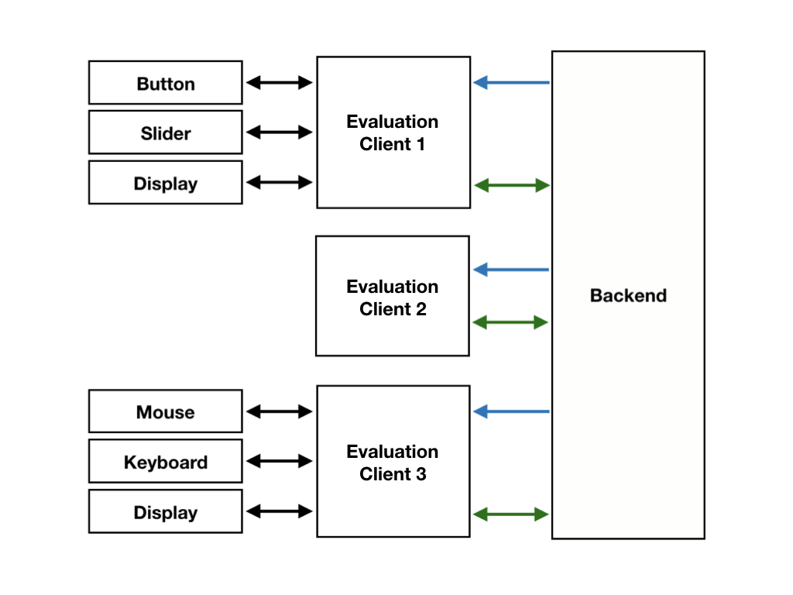
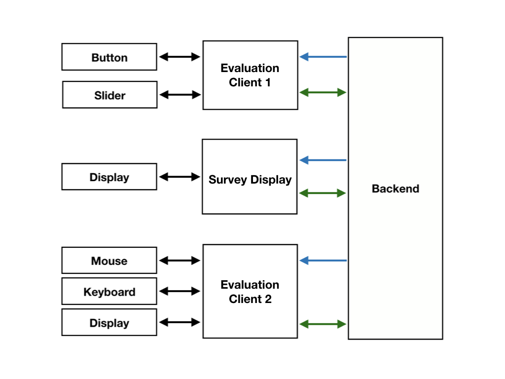
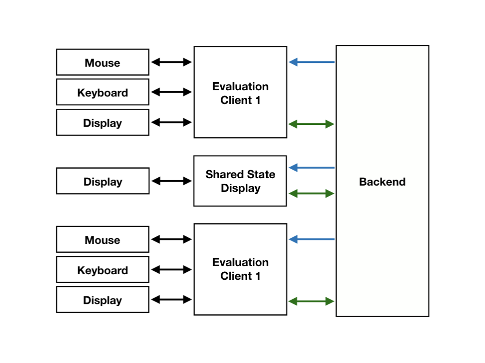

This chapter will give you an impression of what clients can be used for and how they could interact to enhance the participants voting experience. These are only three of nearly endless possibilities to combine clients, but in our opinion they will be the most used ones. Even though each of these compositions consists of three clients, the amount is not fixed. It's still only an example of what could be done.

In this composition, all clients are used to answer a survey. Each client answers all of the questions on its own and they are not interacting in any way. All of them registered themselves as permanent clients and joined the same domain. When connecting to the domain, they got the survey-data straight away and could immediately be used for voting. After all questions are answered by a client, it gets the message that a vote has been persisted (the payload of the last setAnswer-mutation contains the voteCreated-flag set to true). Now it can reset its internal state too the start of the survey and allow another participant to give answers (no updates are required in the backend). How the clients present the survey is up to themselves. They could present the same survey in totally different ways. This is shown by the fact, that two of those three clients use hardware. The first one could be a Pi, that is interpreting the signals of the slider and buttons and shows the survey on an external display. The second client could be a tablet that opened a website and got connected to the domain as a client. The third one could be a normal PC with a mouse, a keyboard and a display.
Because each client answers the questions on its own and defines its own pace, they dont need to subscribe to many attributes. They should subscribe to:

The second composition consists of two clients that vote and a third client that's used as a survey display. They are all in the same domain. The survey display is supposed to show the questions which are answered by the other clients. These only need to display the answer possibilities. The survey display also controls the pace and flow of the survey. It can set the activeQuestion-attribute of the domain to define, which question should be answered by the other clients. For this to happen, the survey display needs to call the updateDomain(data : DomainUpdateInput)-mutation.
updateDomain(domainID: "ID of the domain", data: { activeQuestion: "ID of the next question" }) {
domain { ... } # Whatever domain-attributes are needed
}
The other clients need to subscribe to this domain, especially to its activeQuestion-attribute and update their view to the new question when it changes. If a client has'nt answered the previous question, the corresponding client should send a neutral answer before showing the new one. If a question was answered, the client needs to wait for the new question.
This process could be automated, if the survey display subscribes to the answer updates of the domain. Then it gets notified if an answer was send and by which client it was send. It can check if all clients answered and then go on to the following question (setting a time limit would also be a good idea).
The survey display could be any kind of technology that is connected to a display, like a Pi or a smartboard or anything else that also supports http-requests and socket-connections. Clients one and three could be the same as in composition one.

As in composition two, composition three consists of two voting clients and a displaying client. This time, the displaying client is only supposed to show the shared state of a domain or the results of the survey, while the other clients are voting on their own (like in composition one). When displaying the shared state, the client needs to subscribe to the domain and listen for state changes. States could be anything that can be transported / persisted as a string, for example the url of an image. The other clients could react to the input of a participant and use the setState(data : StateSetInput, domainID : HashID!)-mutation to update the shared state, which then gets displayed by the shared state display (which keys are used and how they are processed can be decided by the client-creator).
setState(domainID: "ID of the domain", data: { key: "The key", value: "The value" }) {
state {
key
value
}
}
For displaying the results of a survey, the shared state display needs to subscribe to the vote updates of the survey, that is assigned to the domain the client is connected to. When a new vote is persisted, the client will be notified. Inside of that notification, a summary object containing the pre calculated results will be send. These results can be used to show a visualization. If the predefined results are'nt enough, a client can calculate its own summaries by using the votes it gets out of the subscription and the ones that where in the survey, when the client connected to the domain (can be seen in the updateClient-payload or when asking for the survey-data in a later query). Notice that clients are only allowed to see and subscribe to votes of the survey, that is assigned to the domain they are connected to.
If the client only wants to show the votes of its own domain, it needs to filter votes by their domainID-attribute. For live-updating visualizations of single questions (inside of a domain), the answerUpdates-subscription can be used.